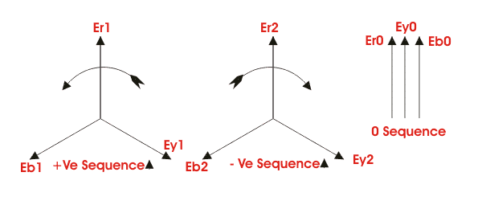

Network Reduction
Symmetrical Component Analysis
Sequence Impedance
Positive Sequence Impedance
Negative Sequence Impedance
Zero Sequence Impedance
Before applying proper electrical protection system, it is necessary to have through knowledge of the conditions of electrical power system during faults. The knowledge of electrical fault condition is required to deploy proper different protective relays in different locations of electrical power system.
Information regarding values of maximum and minimum fault currents, voltages under those faults in magnitude and phase relation with respect to the currents at different parts of power system, to be gathered for proper application of protection relay system in those different parts of the electrical power system. Collecting the information from different parameters of the system is generally known as electrical fault calculation .
Fault calculation broadly means calculation of fault electric current in any electrical power system. There are mainly three steps for calculating faults in a system.
- Choice of impedance rotations.
- Reduction of complicated electrical power system network to single equivalent impedance.
- Electrical fault currents and voltages calculation by using symmetrical component theory.
Impedance Notation of Electrical Power System
If we look at any electrical power system, we will find, these are several voltage levels. For example, suppose a typical power system where electrical power is generated at 6.6 kV then that 132 kV power is transmitted to terminal substation where it is stepped down to 33 kV and 11 kV levels and this 11 kV level may further step down to 0.4kv. Hence from this example it is clear that a same power system network may have different voltage levels. So calculation of fault at any location of the said system becomes much difficult and complicated it try to calculate impedance of different parts of the system according to their voltage level. This difficulty can be avoided if we calculate impedance of different part of the system in reference to a single base value. This technique is called impedance notation of power system. In other wards, before electrical fault calculation, the system parameters, must be referred to base quantities
and represented as uniform system of impedance in either ohmic, percentage, or per unit values.
Electrical power and voltage are generally taken as base quantities. In three phase system, three phase power in MVA or KVA is taken as base power and line to line voltage in KV is taken as base voltage. The base impedance of the system can be calculated from these base power and base voltage, as follows,
Per unit is an impedance value of any system is nothing but the radio of actual impedance of the system to the base impedance value.
Percentage impedancevalue can be calculated by multiplying 100 with per unit value.
Again it is sometimes required to convert per unit values referred to new base values for simplifying different electrical fault calculations. In that case,
The choice of impedance notation depends upon the complicity of the system. Generally base voltage of a system is so chosen that it requires minimum number of transfers.
Suppose, one system as a large number of 132 KV over head lines, few numbers of 33 KV lines and very few number of 11 KV lines. The base voltage of the system can be chosen either as 132 KV or 33 KV or 11 KV, but here the best base voltages 132 KV, because it requires minimum number of transfer during fault calculation.
Network Reduction
After choosing the correct impedance notation, the next step is to reduce network to a single impedance. For this first we have to convert the impedance of all generators, lines, cables, transformer to a common base value. Then we prepare a schematic diagram of electrical power system showing the impedance referred to same base value of all those generators, lines, cables and transformers.
The network then reduced to a common equivalent single impedance by using star/delta transformations. Separate impedance diagrams should be prepared for positive, negative and zero sequence networks.
There phase faults are unique since they are balanced i.e. symmetrical in three phase, and can be calculated from the single phase positive sequence impedance diagram. Therefore three phase fault electric current is obtained by,
Where I f is the total three phase fault current, v is the phase to neutral voltage z 1 is the total positive sequence impedance of the system; assuming that in the calculation, impedance are represented in ohms on a voltage base.
Symmetrical Component Analysis
The above fault calculation is made on assumption of three phase balanced system. The calculation is made for one phase only as the electric current and voltage conditions are same in all three phases. When actual faults occur in electrical power system, such as phase to earth fault, phase to phase fault and double phase to earth fault, the system becomes unbalanced means, the conditions of voltages and currents in all phases are no longer symmetrical. Such faults are solved by symmetrical component analysis. Generally three phase vector diagram may be replaced by three sets of balanced vectors. One has opposite or negative phase rotation, second has positive phase rotation and last one is co-phasal. That means these vectors sets are described as negative, positive and zero sequence, respectively.

The equation between phase and sequence quantities are,
Therefore,
Where all quantities are referred to the reference phase
r.
Similarly a set of equations can be written for sequence currents also. From , voltage and electric current equations, one can easily determine the sequence impedance of the system. The development of symmetrical component analysis depends upon the fact that in balanced system of impedance, sequence currents can give rise only to voltage drops of the same sequence. Once the sequence networks are available, these can be converted to single equivalent impedance.
Let us consider Z1, Z2 and Z0 are the impedance of the system to the flow of positive, negative and zero sequence electric current respectively.
For earth fault
Phase to phase faults
Double phase to earth faults
Three phase faults
If fault electric current in any particular branch of the network is required, the same can be calculated after combining the sequence components flowing in that branch. This involves the distribution of sequence components currents as determined by solving the above equations, in their respective network according to their relative impedance. Voltages it any point of the network can also be determine once the sequence component currents and sequence impedance of each branch are known.
Sequence Impedance
Positive Sequence Impedance
The impedance offered by the system to the flow of positive sequence electric current is called positive sequence impedance .
Negative Sequence Impedance
The impedance offered by the system to the flow of negative sequence electric current is called negative sequence impedance .
Zero Sequence Impedance
The impedance offered by the system to the flow of zero sequence electric current is known as zero sequence impedance .
In previous fault calculation, Z1, Z2 and Z0 are positive, negative and zero sequence impedance respectively. The sequence impedance varies with the type of power system components under consideration:-
- In static and balanced power system components like transformer and lines, the sequence impedance offered by the system are the same for positive and negative sequence currents. In other words, the positive sequence impedance and negative sequence impedance are same for transformers and power lines.
- But in case of rotating machines the positive and negative sequence impedance are different.
- The assignment of zero sequence impedance values is a more complex one. This is because the three zero sequence electric current at any point in a electrical power system, being in phase, do not sum to zero but must return through the neutral and /or earth. In three phase transformer and machine fluxes due to zero sequence components do not sum to zero in the yoke or field system. The impedance very widely depending upon the physical arrangement of the magnetic circuits and winding.
- The reactance of transmission lines of zero sequence currents can be about 3 to 5 times the positive sequence current, the lighter value being for lines without earth wires. This is because the spacing between the
go
andreturn
(i.e. neutral and/or earth) is so much greater than for positive and negative sequence currents which return (balance) within the three phase conductor groups. - The zero sequence reactance of a machine is compounded of leakage and winding reactance, and a small component due to winding balance (depends on winding tritch).
- The zero sequence reactance of transformers depends both on winding connections and upon construction of core.
Under Construction - The reactance of transmission lines of zero sequence currents can be about 3 to 5 times the positive sequence current, the lighter value being for lines without earth wires. This is because the spacing between the
 by
by